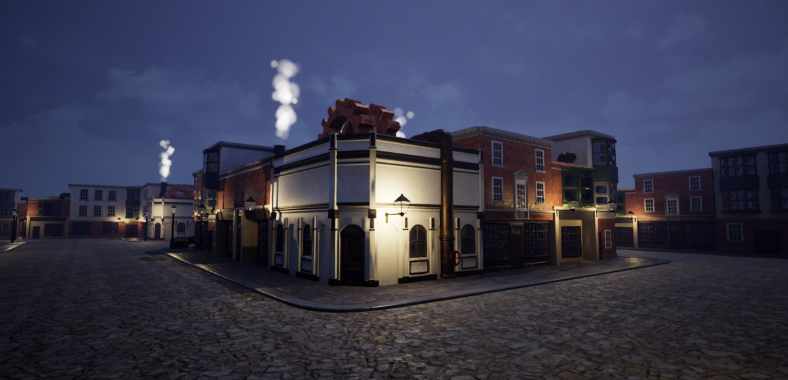
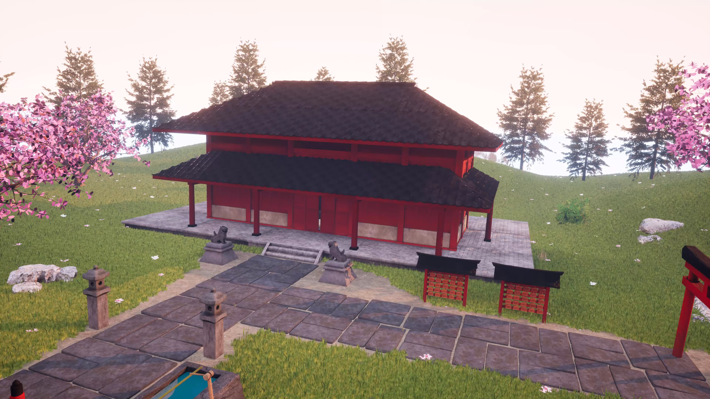

3D art / University work
Models & environments
Selected environment art, props and animation projects created with game-ready workflows.

Steampunk Town
A Victorian-era steampunk environment inspired by Dishonored and BioShock Infinite, created to demonstrate game-art techniques for client lectures.
- PBR materials and material creation
- Modular assets and efficient instancing
- Cloth, lighting, decals and destructible objects
- Photogrammetry and Unreal Engine Blueprints

Japanese Shrine
A small Japanese shrine running in UE4, created to develop environmental-modelling skills using PBR materials, Substance Designer and photogrammetry.
Skeleton Casino
An Unreal Engine environment and character animation about a skeleton losing money at a casino. The character performance was captured in a motion-capture studio.
Back to the Future
A first-year project recreating the famous time-travelling car, including its recognisable props and animated parts.
SwordFish II
Spike Spiegel’s SwordFish II from Cowboy Bebop, made as a one-day challenge to create a PBR-textured UE4 asset.
Japanese Komainu
A guardian statue made for the Japanese shrine project, sculpted at high poly and baked to a low-poly mesh to retain detail.
CRT TV
A classic gaming CRT TV prop using PBR materials, repurposed from a placement-year project.